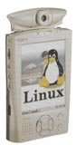
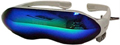
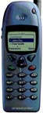
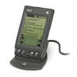
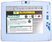
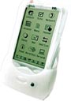
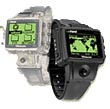
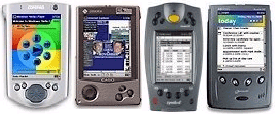
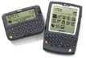
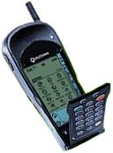

| LevSelector.com |
|  |
|

Sony PC Glasstron, PLM-A35, LCD glasses reproduces the feel of viewing a 52’ television from approximately 6 feet. Standard audio/video inputs. |
This page was written in the beginning of 2000.
It was not updated since - but it is interesting
how fast this area is progressing.
| Why WAP will die | home - top
of the page - |
•
www.jayson.net/wap.htm
- Why WAP will die - very informative and eye opening article by Jayson
Pifer
•
cic.ucscarb.ac.uk/techbriefs/wapdead.pdf
- WAP is dead, long live GPRS - excellent article by Angus M. Marshall.
Here is a short recap:
With high speed GPRS (General Packet Radio Service)
networks going live across the world (by the end of 2000), WAP is becoming
obsolete. GPRS will offer speeds equivalent or exceeding those of regular
modems. Largest companies (like Nokia) are already committed to producing
3rd generation digital devices (1st - basic digital phone, 2nd - WAP, 3rd
- full internet via GPRS). These devices will be capable
of full internet access the way we browse internet now from work or home
computers. WAP, on the other hand, is a protocol designed to allow
mobile devices with slow connections to have some very limited internet
access with limited technology (small black &white screens, fewer keys
than there are letters in the alphabet, and no mice). WAP is, in
essence, a solution to a problem that is disappearing.
| GPRS | home - top
of the page - |
GPRS - General Packet Radio Service:
• GPRS is packet switching technology
over current GSM networks. GSM is a digital cellular system with
over 250,000,000 subscribers in over 140 countries. Mobile operators can
quickly and inexpensively complete GSM upgrades to GPRS because the
addition is mainly software.
• GPRS supports the principle Internet
communications protocols, IP and X.25. This means that the user will no
longer need to dial up a separate ISP to get access to the Internet.
• GSM, and soon GPRS, is
deployed on a global basis with widespread coverage throughout Europe,
Asia, North America, and Africa.
• GPRS technology is "always on-line
and always connected" meaning that there are no special dial-ups required.
GPRS users can remain on-line without continuously occupying a specific
radio channel since a channel is allocated only when a data packet is to
be sent or received. This means users will not have to log on each time
they want to check their e-mail or use other services. Consequently, operators
may encourage GPRS users to remain connected by charging them for data
volume instead of connection time.
• GPRS will enable increase data
transmission speeds from the current 9.6 kbps to over 50 kbps. Additionally,
GPRS is just one step on the migration to EDGE and 3G, where speeds will
approach 384 kbps and 1.5 mbps.
• GPRS is also a global standard
and has the support of all telecom vendors, which means that your interoperability
concerns are greatly reduced.
| Wireless News and Reviews | home - top
of the page - |
•
www.wirelessweek.com/
- free subscription (tel: 303-470-4445, 303-470-4800, Cahners Business
Information)
•
www.zdnet.com/filters/email/
- free subscription to ZDNET mobile email-newsletter
•
www.wwc.com//signup.html
- free subscription to monthly email newsletter from WWC (Wireless Web
Connect).
•
www.sybase.com/developer/mobilewirelessdeveloper/
- email mobile newletter from Sybase
•
www.wirelessdevnet.com/boards/register.phtml
- Wireless Development Network email newsletter
•
www.zdnet.com/enterprise/filters/resources/0,10227,6008651,00.html
- ZDNet
•
directory.google.com/Top/Computers/Mobile_Computing/
- google directory
•
directory.google.com/Top/Computers/Mobile_Computing/News_and_Reviews/
- News and Reviews
•
www.allnetdevices.com
- allNetDevices - handheld computers, smart phones, set-top boxes and other
devices that connect to the Internet.
•
www.thinkmobile.com
www.allnetdevices.com - News, events, channels, and reviews for the mobile
computing enthusiast
•
www.pmn.co.uk
- PMN Publications - The latest news about mobile computing and communications.
•
www.mobileinfo.com
- MobileInfo - Mobile and wireless computing information for IT professionals
•
www.21store.co.uk/pdantic
- Peter PDAntic - News and opinion about mobile computers and phones, game
stations, and even smart gas pumps.
•
www.mypdanews.com
My PDA News - News about Windows CE, Palm, Handspring Visor, and Psion
computers.
•
www.pda1source.com
- Hardware and software news and information for palm-size computers.
•
Aero-HOST.com/Dell-laptops.htm
- A hands-on review: Using a cellular modem with a Dell Latitude CPt C333GT
notebook computer.
BOOKS:
| Palm:
Palm OS Programming Bible by Lonnon R. Foster (November 2000) Palm OS Bible (with CD-ROM) by Glenn Brown (January 2000) Advanced Palm Programming : Professional Developer's Guide by Steve Mann, Ray Rischpater (October 2000) Sams Teach Yourself Palm Programming in 24 Hours by Gavin Maxwell , 1999 PalmTM Database Programming: The Complete Developer's Guide by Eric Giguere, 1999 Palm OS Programming For Dummies® by Liz O'Hara, John Schettino, 1999 |
| EPOC Operating System & SYMBIAN | home - top
of the page - |
| WAP | home - top
of the page - |
| WML - Wireless Markup Language (WAP
- Wireless Application Protocol):
• www.waplinks.com/faq.asp - great site • www.oasis-open.org/cover/wap-wml.html - WML Specification and related links. • www.wirelessdevnet.com/training/WAP/WML.html - WML and WMLScript tutorials. • www.nokia.com/wap/products.html - Nokia WAP-enabled phones (models 6210, 6250, 9110i, 7110), Server (connects phones with web servers), Toolkit, Client emulator, messaging platform - download free or trial tools: • www.forum.nokia.com/main/1,6668,1_1_2,00.html - • www.wapforum.org - • www.phone.com - • updev.phone.com (also HDML - Handheld Device Markup Language ) WML is is a markup language based on XML, and is intended for use in specifying content and user interface for narrowband devices, including cellular phones and pagers (small display, limited user input facilities, narrowband network connection, limited memory and CPU). WML includes text and image support, formatting, layouts. Decks/cards, navigation & linking between decks and cards, all WML decks can be parameterised using a state model (state management). • www.macromedia.com/macromedia/proom/pr/2000/index_nokia_wml.fhtml - Nokia and Macromedia have brought out a WML authoring extension for Dreamweaver (June 2000). • dynamic.macromedia.com/bin/MM/exchange/dreamweaver/main.jsp - download Nokia extension for Dreamweaver. • www.wapaw.com - powering the wireless web • www.wapholesun.com/links.htm - many wap links • www.macalla.com - Macalla Software • www.wap.net/developer/devboard/index.html - DEV.WAP Developers' WWW Board • www.jumbuck.com - good site (also check links here: www.jumbuck.com/developer.html) • www.cazac.com/darti.php3 - WAP portal (short WAP tutorial - local copy) |
WAP - a specification for a set of communication protocols to standardize
the way that wireless devices, such as cellular telephones and radio transceivers,
can be used for Internet access, including e-mail, the World Wide Web,
newsgroups, and Internet Relay Chat (IRC).
•
www.bluetooth.com/
- Bluetooth (wireless connectivity)
•
www.kizoom.com/home.html
- Kizoom (travel info for WAP phones)
•
www.wap411.com/home.asp
- WAP411 (personal wireless concierge)
•
www.wapforum.com/
- WAP Forum (certification etc.)
•
www.wap.net/
- WAP.Net ("comprehensive resource")
•
www.wapnet.com
-WAPNet.com
•
www.waptastic.com/application/default.asp
- WAPtastic
•
www.whatis.com
- WML (Wireless Markup Language)
The WAP was conceived by Ericsson,
Motorola,
Nokia,
and Phone.com (formerly
Unwired Planet).
| Palm | home - top
of the page - |
| "Palm computing":
• www.palm.com/dev • avantgo.com/frontdoor/index.html • www.mobilelink.org • www.vindigo.com - applications • www.handspring.com - founded by inventors of original Palm. Buy this model (if any). |
 |
| •
www.3com.com
- 3Com Palm VII is Wireless: Check stock quotes from
the airport. Send e-mail from a taxi. Book a flight, get directions and
read the news virtually anywhere, anytime. With a Palm VII™ handheld and
the Palm.Net™ Wireless Communication Service, you'll get the organizing
power you've come to expect from Palm, plus, you'll tap into the best of
the Internet.
• www.orbworks.com/PalmOS - PocketC (a C compiler for the Palm) • www.daggerware.com/hackmstr.htm - HackMaster is a master control that allows "hacks." Hacks for the Palm are tools to really leverage the Palm. • developer.earthweb.com/directories/pages/dir.palm.html - One of the best compilations of information. Has much of the documentaion found on the 3Com site, but organized better. • cbs.marketwatch.com/archive/20000530/news/current/hand.htx?source=blq/yhoo - Handspring is going public and recently dropped its share price. =) • www.pmn.co.uk • www.palmpower.com • news.cnet.com/news/0-1006-200-2152289.html- Sony to offer peek at Palm-powered handheld (6/26/00) |
|
| Linux-based | home - top
of the page - |
| Small linux-based devices:
• www.transmeta.com/ ( www.transmeta.com/mobile/ ) - S3's Crusoe powered web pad features: * Text Book size with a 10.4 inch LCD display * USB, Wireless Internet connection and hard disk * Touch activated interface * One handed design * Long battery life (8-10 hours) * Based on mobile Linux * Designed for web surfing, portable multimedia, electronic book applications, streaming audio / video and productivity. • www.uclinux.org - Linux ported on handheld devices • www.uclinux.com - Linux Microcontroller Kit • www.rt-control.com - embeded hardware and software (Linux) • www.lineo.com - embeded Linux Software |

web pad |
| •
www.linuxdevices.com
- linux devices
• www.linux-vr.org - Linux VR project - to bring the Linux operating system to NEC VR Series devices, most of which were originally designed to run Windows CE based handheld computers. So far, Linux VR is up and running on the Vadem Clio, the Casio E-105, the Everex Freestyle, and more. The Linux VR project is a fully open source project, released under GPL. Operating System: Linux. Programming Language: C. • www.linuxdevices.com/articles/AT4992223978.html - Agenda Software - a Linux-based "Open PDA" - VR3 - planned to be offered at $150..$300 in 1st qrt of 2001. • developer.agendacomputing.com - developer web site for Agenda Linux-based PDA VR3. "Agenda isn't a "new OS". It is Linux. The real McCoy. And it is X. And bash. And whatever else you port. Leverage open-source operating system and tools. Source-available system utilities and productivity suite software. Program in C or C++. Use familiar tools and libraries like gcc and glibc. Don't settle for less - the VR3 runs Linux 2.4 and XFree86. Build user interfaces easily using the built-in FLTK library. Access databases efficiently using built-in libdb support. This site is dedicated to helping you, the developer, make the most of your handheld computer. After all, it's your Agenda." |

Agenda VR3 |
| •
http://www.myhelio.com/cgi-bin/vtechhelio.storefront
- Helio - PDA Stylus where you can load linux
• http://www.vadem.com/ - Clio PC Companion, normally runs Windows CE, but can run Linux too. • http://www.psionusa.com/ - Linux7k is a Linux port to Psion Series 5 and Geofox One palmtops |
|
• http://www.gmate.co.kr - very cool looking Lunix based PDA called YOPY |

• http://www.onhandpc.com - onHand PC like wrist watch |
| Microsoft | home - top
of the page - |
| Microsoft PocketPC •
www.microsoft.com/pocketpc/
-
• www.microsoft.com/mobile/default.asp 16MB and 32MB RAM, 8 hrs battery life Windows CE operating system (ver.3.0) PocketPC will deliver multimedia applications, including a media player and an e-book reader. The devices will also include pint-sized versions of Microsoft's Word and Excel applications to let users view and annotate documents on their devices. Forecast: WindowsCE can growfrom 15% to 40% of the Palm market in 3 years. Next - developing cellular telephones based on Windows CE. |

Manufacturers: - Casio Corp., - at least one device - Cassiopea E-115 - Compaq Computer Corp. - Hewlett-Packard Co. - will offer two PocketPC devices: Jornada 540 and 545 |
| Java | home - top
of the page - |
| •
http://news.cnet.com/news/0-1006-200-2040284.html?st.ne.1002.ots.ni
- 06/08/00 - ... Sun gave a high priority to its gadget version of
Java called Java 2 Micro Edition. In a keynote address, Sun CEO Scott McNealy
touted cell phones, video-game consoles and smart credit cards as the next
frontier for Java.
• www.thinkmobile.com/Article/00/00/15/ - There are 3 major platforms in the handheld/PDA marketplace: Palm, Windows CE (now renamed Windows Powered), and Psion. All three have different Java implementations. • http://www.ibutton.com/ - small java programmable button from Dallas Semiconductor: 16mm steel-encased iButton is a Java computer with a 64 kbyte ROM, and 134 kbyte RAM that can store over 30 certificates with 1024-bit keys and hundreds of user names and passwords, a color ID picture and the application programs of many different service providers. |
| Misc. | home - top
of the page - |
| • http://www.rim.net/ - RIM (NASDAQ: RIMM) has mobile email solutions, wireless handhelds, and wireless modems. In June 2000, BlackBerry won the 2000 PC World World Class Award for Best Wireless Communication Device. |  |
| • http://www.kyocera-wireless.com/pdq/pdq_series.htm - Kyocera pdQ Smartphone - cellular phone with Palm-compatible screen and software. |  |